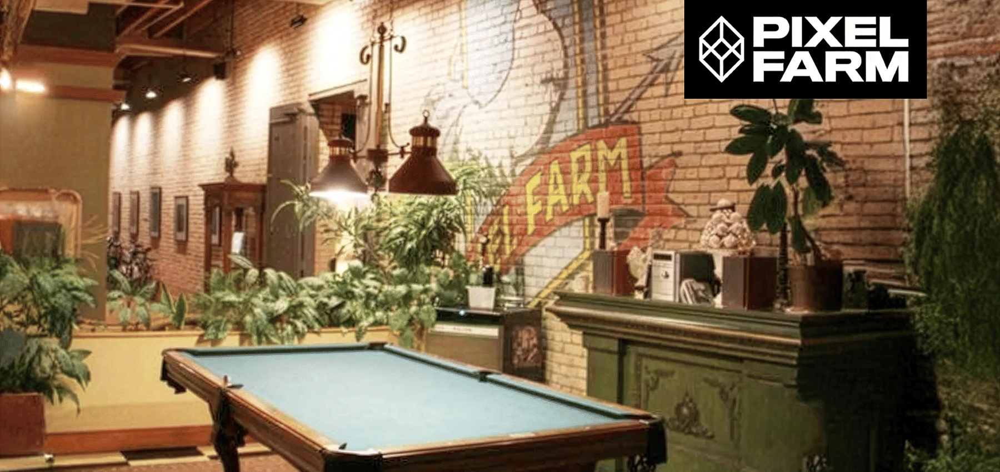

Writing · 8 min read
The hardest thing I’ve had to design is what’s next
Twenty years into my design career, I’m turning the process on myself: figuring out where I belong in a profession that’s changing faster than ever.

For most of my career, I’ve helped organizations make sense of complicated problems.
Now I have one of my own.
I’m trying to figure out where twenty years of design experience belongs in an industry that’s being fundamentally reshaped by AI. And I’ve decided to approach it the only way I know how: as a design problem.
After thirteen years at the same consulting firm, I’m in an unexpected period of career transition. I’m looking at a job market where experienced designers are competing for fewer opportunities, AI is changing how products get built, and some of the skills that defined our profession are becoming dramatically easier to reproduce.
It’s an unusual position to be in. I have more experience, better tools, and a greater ability to build things than at almost any other point in my career. Yet the path forward feels less obvious.
I suspect I’m not the only designer experiencing this contradiction.
Key idea 1 of 5
A conversation that made things clearer
I recently listened to Jenny Wen speaking with Lenny Rachitsky (opens in a new tab) about how AI is changing product design.
Much of the conversation resonated with what I’ve been experiencing firsthand.
Jenny describes how the process is changing now that engineering teams can build and iterate much faster:
 Research, then mockupsevery detail defined before anyone builds
Research, then mockupsevery detail defined before anyone builds Handoff, then waitingthe design goes over the wall to engineering
Handoff, then waitingthe design goes over the wall to engineering Shaping it as it’s builtdesign alongside engineering, in the working product
Shaping it as it’s builtdesign alongside engineering, in the working product
She also describes the value of strong generalists: people with meaningful depth across several disciplines who can move between strategy, design, and implementation.
That caught my attention.
Earlier in my career, I worked across both design and development. Over time, my work became more focused on enterprise UX, product strategy, interaction design, and design systems.

Recently, tools like Claude Code have allowed me to reconnect those disciplines. I can explore an interaction, implement a working version, test an assumption, and improve the result without treating design and development as entirely separate activities.
In some ways, the profession is moving toward the kind of cross-disciplinary work that originally attracted me to it.
But I don’t think learning to build faster is the complete answer.
Key idea 2 of 5
When making things becomes easier, choosing what matters becomes harder
One of the most interesting parts of Jenny’s conversation was her willingness to question an assumption designers often make: that human taste and judgment will always be our defensible advantage.
AI is getting better at both. I don’t think we should build our career strategies around the hope that it never catches up.
But there is another important distinction.
Producing a solution isn’t the same as deciding whether that solution is appropriate.
Someone still has to understand the people affected, consider the consequences, navigate competing priorities, and accept responsibility for the decision.
That distinction connects directly to the work I’ve done throughout my career.
In complex enterprise systems, a technically correct solution can still be a poor experience. A workflow can function perfectly while confusing its users. An automated recommendation can be reasonable on paper while overlooking essential operational context.
The difficult part is often deciding what should happen, what the system should communicate, and when a person needs to intervene.
This is also what motivated my recent Agent Review prototype.
I wanted to explore what happens when AI coding agents can produce more changes than designers can reasonably review.
Rather than asking a person to approve everything, what if the system could distinguish routine work from changes requiring judgment or authorization?
One example involves a “Cancel subscription” link that someone built by hand in small gray text, where every other action uses the design system’s Button. Automated checks can verify contrast and design-token compliance. But they cannot establish whether the gray is on purpose, or whether people depend on finding that link.
There are multiple defensible solutions. Choosing between them requires understanding the context and the trade-offs.

Agent Review is still an experiment, using simulated scenarios rather than validated user outcomes. But it expresses the kind of problem I find increasingly important.
As AI takes on more of the production work, I want to help design the systems that make its work understandable, useful, and accountable.
Not because humans will always make better decisions than machines, but because real products still need clear responsibility for what they do.
Key idea 3 of 5
Turning the design process on myself
That brings me back to my career.
I’ve been treating this transition as a design challenge rather than immediately jumping into a conventional job search.
I’m in a research and experimentation phase, trying to answer a question that is more difficult than updating a résumé:
Where can my particular combination of experience create the most value now?
I’ve explored different ways to position myself. Senior product designer. Enterprise UX specialist. Visual designer. Designer who builds.
Each describes part of my experience, but none fully captures it.
The more I examine my work, the more a consistent theme emerges: I enjoy turning complexity into experiences that people can understand, trust, and use. I care about visual craft, but also about how a system behaves, how it is implemented, and how the decisions behind it hold up in the real world.
I don’t want to abandon my experience to chase the newest definition of an AI designer. But I also don’t want to preserve an outdated definition of the job simply because it’s familiar.
So I’m approaching my next career move through three hypotheses about where the strongest opportunity is:
 AI in enterprise productswhere oversight, governance, accessibility and complex workflows matter
AI in enterprise productswhere oversight, governance, accessibility and complex workflows matter Product, visual and codeone senior designer moving between them
Product, visual and codeone senior designer moving between them A role without a familiar titleone that doesn’t fit the titles I’ve held
A role without a familiar titleone that doesn’t fit the titles I’ve held
The point of this phase isn’t to find the perfect label. It’s to identify a credible direction, demonstrate it through real work, and see where it resonates.
Key idea 4 of 5
Research is useful. Eventually you have to ship.
There’s an irony here that I haven’t overlooked.
I’m using a design process to rethink my career just as Jenny Wen is arguing that our traditional design processes need to change.
And she’s right about something important: we can spend too long refining a concept before exposing it to reality.
That applies to careers too.
It’s tempting to keep rewriting a portfolio, experimenting with positioning, refining case studies, and researching opportunities until everything feels perfectly aligned.
I know that temptation because I’m living it.
But a career strategy, like a product strategy, can’t be validated entirely in isolation.
At some point, I need to put my thinking in front of hiring managers, product leaders, and other designers. Listen to what resonates. Understand what doesn’t. Find out where my experience solves a problem an actual team has.
That feedback might challenge my assumptions, and that’s exactly why I need it.
My next phase is becoming clearer:
 Definea stronger position, not everything to everyone
Definea stronger position, not everything to everyone Demonstrateworking examples, like Agent Review, that show how I decide, not only what I make
Demonstrateworking examples, like Agent Review, that show how I decide, not only what I make Teststart conversations and learn which problems teams need solved
Teststart conversations and learn which problems teams need solved Refinetreat the portfolio and résumé as drafts; change the story when the evidence says to
Refinetreat the portfolio and résumé as drafts; change the story when the evidence says to
The goal isn’t to create a flawless professional identity before reaching out.
It’s to create a strong enough direction to begin learning from the market.
Key idea 5 of 5
What I know about the road ahead
I don’t have a simple answer for what happens to the product design profession next.
AI is genuinely changing the economics of producing software. Some familiar responsibilities will shrink, others will expand, and new kinds of work will emerge. Experience alone won’t guarantee relevance, and neither will proficiency with the latest AI tools.
I also don’t think every designer needs to become an engineer or reinvent themselves as an AI specialist.
The challenge is to understand what we’re exceptionally good at, where that intersects with emerging needs, and how we can demonstrate meaningful value rather than simply claim it.
For me, that means continuing as a hands-on senior designer who brings together research, visual craft, systems thinking, implementation, and judgment.
I’m interested in teams building complex products, especially where AI is becoming part of how people work and make decisions.
I want to help make those experiences not just faster, but more coherent, accessible, understandable, and trustworthy.

I’m still testing this direction. I expect parts of it to change.
And perhaps that’s the most important realization of this entire exercise.
I don’t need to design the rest of my career before taking the next step. I need a clear hypothesis, enough conviction to act on it, and the willingness to learn from what happens next.
That’s where I am right now.
And for the first time in a while, that feels less like uncertainty and more like a direction.